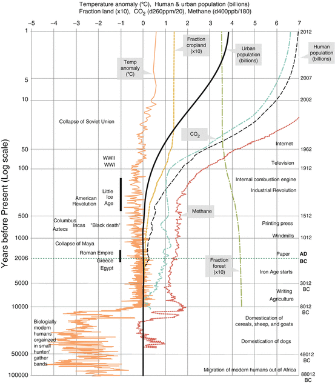
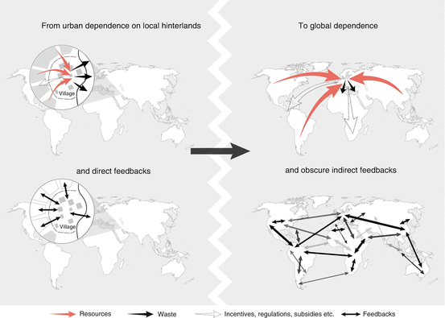

2.1 Human History and Urbanization
History offers many lessons relevant to sustainability by exhibiting how humans and their societies have recognized and responded to challenges and opportunities of their natural environment (Redman 1999; Diamond 2005; Costanza et al. 2007a; Sinclair et al. 2010). Three of the basic approaches to problem solving in antiquity were: (1) mobility of people to available resources, (2) ecosystem management to secure enhanced local growth of produce, and (3) increasing social complexity encoded in formal institutions that guided an expanding range of activities. These solution pathways were fundamental to the rise of early civilizations and are instrumental for integration in the design of sustainable cities in the future (Redman 2011).
2.1.1 Three Approaches to Human Problem Solving and the Emergence of Cities
The first approach, mobility of people to available resources, has been the dominant way of securing adequate subsistence for the vast majority of the human enterprise. Until 10,000 years ago (and more recently in many regions) virtually all people had to move among several locations each year to take advantage of the seasonality of ripening resources and variation in water availability. The dominance of this pattern was only broken by the introduction of agriculture that allowed the establishment of year-round settlements in many regions of the world. Agriculture is thus an example of the second approach to problem solving, ecosystem management for enhanced productivity. This has proven to be an astonishingly successful solution to feeding an ever-increasing global population and to enabling virtually all people to live in permanent settlements (for an overview of human and agricultural development and links to other events through human history, see Fig. 2.1). In fact, the implementation of agriculture and the infrastructural improvements made to enhance productivity were strong incentives for the spread and growth of sedentary communities. A highly effective human-nature relationship emerged from millennia of experimentation—i.e. the village farming community—and became the dominant settlement form across the globe. Small settlement sizes, flexibility in the sources of subsistence, and a balance between extraction from and the regeneration of the local ecosystem made this the most enduring and widespread community type. Although it existed as early as 9 or even 10,000 years ago in the Near East, the concept spread or was reinvented, and similar farming communities housed over half the world’s population as recently as the middle of the twentieth century.
The village farming community proved to be a highly resilient socio-economic unit, yet some of these communities expanded on their approach to ecosystem management to the point where larger aggregations of population were necessary to supply the required labor.

Fig. 2.1
Overview of human history, urban growth, development of agriculture, technology and industry as well as corresponding links to economic growth (GDP), environmental changes and changes in land use (Modified after Costanza et al. 2007a. Published with kind permission of © The Royal Swedish Academy of Sciences. All Rights Reserved)
A third approach to problem solving emerged, however, when larger populations required a transformation in the social order, which was largely achieved through innovations in social complexity. This is at the heart of what scholars call the Urban Revolution and it appears to have occurred first in Mesopotamia (Childe 1950; Redman 1999). The formation of the first cities and their linking together as one civilization on the Mesopotamian plain was relatively rapid, considering the scope of the social and technological changes involved. In about 5500 BC, only 2,000 years after the earliest known occupation of this region, cities emerged, and writing and other traits of urbanism such as monumental buildings and craft specialization had appeared. The rise of cities is not simply the growth of large collections of people—rather, it involves communities that are far more diverse than their predecessors and more interdependent. Relative independence and self-sufficiency characterized village farming communities, but it also limited their growth. Specialization in the production of various goods and complex exchange networks represented one way in which urban societies were able to grow. Cities were dependent on their hinterlands of surrounding towns and villages and developed ways to extract goods and services from their neighbors (see left panel in Fig. 2.2). It is clear that technological inventions such as effective irrigation agriculture, the manufacture and widespread exchange of goods, and the advance of science and mathematics were fundamental to the growth of cities. In turn, cities became and continue to be centers of innovation. Moreover, new inventions in the social realm, such as class-structured society, formalized systems of laws, and a hierarchical territorially-based government made cities possible and have continued to characterize their operation.
2.1.2 Early Development of Cities
The landscape-productivity-human relationship evolved in villages and towns; this enabled the growth of large, diverse populations that would aggregate into what are now called cities. The cities of antiquity in Mesopotamia and other regions responded to the specific opportunities and constraints of their local social and ecological environment, yet general patterns emerged that share commonality with contemporary cities and may provide useful insights (Simon 2008; Smith 2012). The hallmarks of cities are: (a) a large population that (b) aggregates in a central location with (c) buildings and monuments that (d) represent institutions that organize and facilitate productivity. From the earliest times in Mesopotamia and in other regions, aggregations of people and their wealth have been threatened by military hostilities and they have repeatedly sought refuge behind strong defensive fortifications (Redman 1978). This has led to densely packed cities behind defensive walls, but at the same time growing rural to urban migration has led to settlements spreading outside the walls, a phenomenon that today one might call sprawl. This pattern of densely packed housing and central institutions within the walls, and residential settlement spreading far beyond the walls was frequent in the Near East, Asia, and Medieval Europe (Boone and Modarres 2006). In fact, Marco Polo reported that around the Mongol capital that would eventually become Beijing, “There is a suburb outside each of the gates, which are 12 in number, and these suburbs are so great that they contain more people than the city itself” (reported in Smith 2010).
A different type of sprawl characterized the layout of other ancient cities where residences were interspersed among agricultural plots in an extensive low-density continuum surrounding central institutional buildings and monuments. Scholars have identified this settlement structure among the cities of the Khmer of early medieval Cambodia, the classic Maya of Central America, and some precolonial African societies (Evans et al. 2007; Scarborough et al. 2012; Simon 2008). The capital city of the Khmer, Angkor, is well known for its central temples and massive hydraulic works, but it was supported by a vast sprawl of residences, farm plots, local ponds, and an infrastructure that tied together roughly 1,000 km2 of low density urbanism (Evans et al. 2007). Low density urbanism also characterized many of the major Mayan cities, such as Tikal in Guatemala and Caracol in Belize, where major constructions of temples, pyramids and palaces in a central location were surrounded by a vast spread of housing complexes, agricultural plots, and an infrastructure of roads, causeways, and reservoirs tying them together (Scarborough et al. 2012). In both of these cases, agriculture within the broadly defined urban boundaries provided a major share of the city’s subsistence; this highlights the ancient roots of the modern revival of urban agriculture (Barthel and Isendahl 2012).
Examining events and processes in the past often will provide useful insights into the origin of driving forces that impact cities today. However, the productive relationships that underlie the growth and success of cities may at the same time lead to relationships that are maladaptive, creating increased long term risks. For example, the concept of private property emerged to replace weak sense of ownership, lack of ownership, and/or the concept of community ownership. Farmers were increasingly able both to produce more food than their family required and they found ways to store this surplus for trade or for guarding against future bad harvests. However, one could only eat so much and a variety of factors limited the amount of food that could be effectively stored, including the ability of landlords and elites to appropriate some of the surplus through taxes. Hence the stimulus to produce a surplus remained limited in most farming villages. What changed this relationship, and is key to the growth of urban society, is the ability to transform locally produced surplus food into enduring prestige items associated with elevated status. This could only take place under a new social order that acknowledged classes with differential wealth, access to productive resources, power, and status. The promulgation of such a social order required an ideology (through religion, myth, constructed history, and/or law) that legitimized the existence of elite classes and the precious goods that helped to identify them. Of significant importance was that along with the evolution of private property, surplus production, elite goods, and hierarchical class society, the inheritance for membership in these classes and ownership of precious goods became more often defined by family and clan rather than merit. Strength, agility, and intelligence certainly were important, but which family, clan, and class one was born into set the limits on one’s future potential in the age of early cities; to some extent, these constraints continue to operate today (Adams 1966; Prahalad 2005; Scott 1998).
Organizing society into hierarchically stratified classes became widespread as urbanization proceeded; this stratification continues to characterize most regions of the world up to the present day. This administrative framework and the widely accepted ideology that legitimize it became effective means of organizing large groups of people and large-scale productive activities. Territorially-based authority also emerged largely through successful military action and a monopoly on the use of coercive force. This secular authority also needed a source of legitimization, which often manifested in the form of constructed histories, law codes, and institutions of management and enforcement. Not surprisingly, in Western, Middle Eastern and some Asian societies, religious- and secular-based authorities interacted closely and often have been unified into a single entity or a closely cooperating team. Hence, in the newly emergent urban society of Mesopotamia—and later elsewhere across the globe—people could produce more, larger numbers of people could live in a single community and be marshaled as a labor force, sacred orders were established and widely accepted that legitimized the social order and explained appropriate behavior, and security was provided through a monopoly on the use of force and formal systems of laws. This new social and governing order was often reaffirmed through the construction of massive monuments, the performance of complex rituals, and expression through large-sized representational art. The concentration of people, stored supplies, and elite goods led to early cities being targets for raiding and organized military activity; this in turn led to further investment in defense walls and armies to defend cities. This cycle of concentration of wealth leading to military aggression, leading to investment in armies for defense and offense purposes is a cycle that dominates all of human history and can be seen operating today at many levels (Adams 1966; Scott 1998).
2.1.3 Disconnecting the Urban from the Rural: Alienation of Food Production from the Carrying Capacity of Land
Although there is great variation between different urban histories, large numbers of people aggregating into cities generally allowed for specialization of labor and other efficiencies of scale. This often generated the outcome that a large proportion of urban people were no longer self-sufficient in food production and hence, a greater proportion of people elsewhere in rural areas were be responsible for growing food for themselves, for the people in the city, and enough to monetarily offset the cost of transport and distribution. This put a tremendous burden on rural farming communities to produce much more than they would if solely working to supply enough for themselves. As the societal roles of the urban and rural populations grew increasingly different and complex, the objectives and understandings of these populations changed as well. Farmers experienced a shift away from traditional practices of the earlier village-farming era, in which they would have more intimately understood the landscape and productive systems and would have been inclined toward conservation practices wherein they balanced extractive activities with the regenerative capabilities of the land. The urban elite also experienced a shift away from traditional subsistence practices, and began to focus on the net produce they were able to extract from the countryside (or urban industries) and insisted on maximum production with little knowledge of, or concern for, the potential deleterious effects on the rural landscape (Jacobsen and Adams 1958; Redman 1999). However, the disregard for local dynamics of ecological integrity was not simply the product of urban demand; rural land owners, and national and transnational agricultural businesses were also instrumental in the alienation of food production from the carrying capacity of land. The rise of population that the enhanced production of food facilitated was not accompanied by innovation in trans-locational governance or in governance regimes that integrated cities and their hinterlands. In an ideal hierarchical society, even though decision-making authority would be concentrated at the top, one could assume that knowledge would travel up the hierarchy, and that informed decisions and concern would be displayed by decisions that traveled down the hierarchy. This was, however, seldom the case, and rather the dominant pattern was of maximizing short-term returns with little concern for long-term consequences. In many instances, archaeological evidence attests to the intense environmental degradation in the regions around ancient cities, and one can see the impact of urban demand on the rural countryside continuing today (Diamond 2005; Redman 1999) (Fig. 2.2). In Chaps. 22 and 26, we highlight the impact of the rising urban demand for food that is resulting in a competition for agricultural land; this competition is a global trend in land use that is largely unregulated.

Fig. 2.2
Urban centers have moved from being more directly linked to their hinterlands and resource base to a situation where food and other resources are transported across the globe resulting in complex and often masked feedback mechanisms (Prepared by and published with kind permission of © Jerker Lokrantz/Azote 2013. All Rights Reserved)
Other outcomes of an increased urban efficiency create challenges of their own. Many of the world’s devastating contagious diseases were virtually non-existent until the growth of dense urban populations. The spread of the plague, small pox, measles, cholera, and many other diseases can be traced to a combination of humans’ close association with domestic animals and living in large, dense populations. Cities were the centers of people, economic activity, and the arts, but until public health innovations of the twentieth century, cities were also the centers of disease, many of them fatal. Urban agglomerations that are now better connected to each other through air transport continue to pose major health and biodiversity risks, necessitating a rethink of the global response to urban plant- and animal-disease outbreaks. The positive aspects of large urban populations described above also created new challenges that were unknown when the largest communities were several hundred people or less. The simple issue of knowing who everyone is and how to act toward them can no longer be easily handled when a community grows beyond 500 people. Similarly, tranquility and security break down as the population aggregation grows larger; this prompts the introduction of formal, less personal solutions to human interactions and security. Similar challenges that grow with scale of the community, such as transport of people and goods, sanitation, and supply of water and food need to be addressed by formal institutions beyond the extended household. While these more public governance regimes may confer social and economic liberties on some urbanites, especially women, the shift away from the (often male) head of household and community leaders and toward appointed or elected city authority does increase individuals’ dependency on the central authority for basic needs, including personal health and ecosystem integrity.
2.1.4 Lessons for the Future
Several lessons stand out from this brief review of early urbanism. First, humans are amazingly successful at self-organizing to promote their survival in the face of any environment challenge, but there are unanticipated costs to many of these solutions and continued implications for future societies. People manage their social-ecological systems according to their often-limited perceptions of the opportunities and risks, and how they value the alternatives. However, this valuation process may appear very different to people in different social positions and the true “costs” of some alternatives are not recognized at the time; ultimately, they may even threaten the society’s very survival. In general, people respond to problems and opportunities by transforming biota, landscapes, and the built environment so that their immediate net yield is increased and perceived risks are reduced even though native biota and ecological systems may be degraded. Humans also create new values and institutions for collective action to control and optimize the shifting capacities and risks presented by their evolving environments. These collective responses are seen most obviously (but by no means exclusively) in the nineteenth and twentieth century rise of corporations, nation states, and local governments. These structures of power represent the product of struggle, and not all the impacts of individual or collective decisions provide pathways toward a more sustainable and desirable existence.
2.2 Urbanization, Ecosystems and Ecosystem Services
2.2.1 Urban Food Production
Even though ecosystems have been overlooked in urban scholarship (Sinclair et al. 2010), it is evident how significant urban green and blue spaces have been historically in producing a range of provisioning ecosystem services, such as agricultural produce, fish, game, water and fuel (Fraser and Rimas 2010; Redman 1999). In contemporary cities, approximately 200 million urban residents produce food for the urban market, and provide 15–20 % of the world’s food (Armar-Klemesu 2000). For example, in Dar es Salaam, 90 % of all vegetables consumed originate from urban and peri-urban agriculture; the same is true of 60 % of all vegetables in Dakar, and in Hanoi, 58 % of the rice consumed is produced within the jurisdiction of the city (Moustier 2007; Lee-Smith 2010; Lerner and Eakin 2011). Such figures are much lower in Southern African cities (Simon 2013; Battersby 2007), and low but on the increase in some European and North American cities (Simon 2008) (for three historical examples of urban food production see Box 2.1).
2.2.2 Urban Green Spaces
Not all of the green space in pre-industrial urban landscapes, however, was used to produce food. For example, open spaces have often been used as religious sites and as cemeteries. In many cities, particularly European, pleasure parks and pleasure gardens for purely recreational uses have also been present in cities since millennia, but these have mainly been the privilege of emperors, kings and other urban elites. In Stockholm, for instance, ordinary citizens were not allowed to enter such parks and gardens until the mid-1700s (Barthel et al. 2005). The main social drivers that led to a shift toward public use of such green spaces were the rapid urbanization during the industrial revolution, in combination with emerging social values inspired by the Romantic Movement and the French Revolution (Barthel et al. 2005). However, clear delineations between urban and rural areas and use of urban green spaces for purely recreational purposes did not emerge until the nineteenth and twentieth centuries, and were reinforced by the development of a globalized economy, the fossil fuel energy regime, and technological innovations such as the steam engine and the railway (McNeill 2000; Barthel and Isendahl 2012; Barthel et al. 2013). Across Swedish cities, urban food production was ubiquitous until the development of the railway network, and the towns were in fact producing 50 % of their food consumption within their boundaries, and some were producing much more. For instance, in the mid-1700s, Uppsala produced more food than the city dwellers themselves consumed and the surplus was exported outside the city (Björklund 2009).
However, the mental models that developed among urban theorists in the beginning of the 1900s soon excluded the rural aspects of life in the city. One example is the Chicago School of urban sociology. Based in ecological theory (cf. Clements 1916) and using Chicago as a case study, the Chicago School of urban sociology emerged in the 1920s and 1930s to establish a modernist understanding of urban life as separate from rural life (McDonnell 2011). The idea of cities as separate entities essentially detached from their broader life-support systems (Wirth 1938) was strongly linked to major innovations in transportation technology as Chicago became an important hub in the U.S. railroad network in the 1850s, and food transportation over great distances became possible. Establishment as a railroad hub enabled Chicago to grow rapidly from a few thousand inhabitants in the 1850s to over two million in the early 1920s. Industrial-era technological innovation, cheap and efficient travel, and economic growth (opening new markets, speeding up production cycles, and reducing the turnover time of capital) catered for the first wave of space-time compression1 (Harvey 1990). Hence, the modernist ideology underpinning the emergence of urban planning during the early decades of the 1900s distinctly separated local agricultures and other rural dimensions as obsolete in futuristic and normative understandings of the city as an autonomous social system (Barthel and Isendahl 2012).
Box 2.1 Three Historic Examples of Urban Food Production and Emergence of Biodiversity-Rich Urban Landscapes
Ancient Mayan Cities. Cities in Meso-America traded a variety of food commodities both short- and long-distance (Dunning 2004; Isendahl 2006), but seasonally impassable rivers and energetically costly overland transports put a relatively high cost on trade and inhibited bulk-staple exchange (Isendahl 2006, 2012). Hence, much of the food consumed by the urban Maya Indians came from proximate lands (Isendahl 2006, 2012). For instance, large sectors of fertile soils inside the urban landscape were devoid of settlement constructions, but were used as city infields (Isendahl 2012). The management of these infields in Mayan cities was markedly different from the larger and state-owned farmstead gardens (Barthel and Isendahl 2012; Isendahl 2012), which were put under tremendous pressure when competition between city-states intensified, a condition which at least partly contributed to the collapse of Mayan cities in the tenth century AD (Tainter 2011). The infields were used as household farmstead gardens, which concentrated agricultural knowledge and stewardship of the agricultural biodiversity that was the ultimate survival strategy for the populace (Ford and Emery 2008). Owing to residential proximity it was most carefully tended, and most carefully fertilized by the organic waste concentrated by city dwellers, and was used for plant breeding, experimentation, and for seed storage (Ford and Nigh 2009). The household farmstead garden held the key to a resilient flow of urban ecosystem services and provided food security for the population (Barthel and Isendahl 2012). Remnant urban ecosystems and the rich levels of biodiversity found in the urban Yucatan today are hence viewed to be the products of a millennia-long co-evolution in cultural landscapes (Ford and Emery 2008; Ford and Nigh 2009).
Constantinople. Different in many respects from Mayan cities, Constantinople, the capital of the Roman cum Byzantine Empire from the fourth century AD until 1453, got its main source of staples of grain from the Nile Valley and was brought in by trading vessels averaging 40–50 tons each in capacity (Balicka-Witakowska 2010). Although these supply lines were subjected to the difficult winds of the eastern Mediterranean and the fluctuations of Nile river dynamics, the most severe threats to food security were the sieges and blockades that distinctly cut food- and water-supply lines; these disruptions occurred on average every 65 years during the last 1,000 years (Barthel et al. 2010b; Barthel and Isendahl 2012). The most difficult blockade on the food supply lines, at the end of the fourteenth century AD, lasted an astonishing 8 years, but it did not succeed in starving out the urban population (Ljungqvist et al. 2010). To accommodate growth and respond to food and water insecurities during such sieges, an additional wall (the Theodosian Wall) was erected 1.5 km westwards of and about a century after the first
Box 2.1 (continued)
(the Constantine Wall). Major water cisterns and a 3 km2 green common used for cultivation and pasture area were allocated between the old and new walls. This area, in addition to the 2-km-wide buffer zone of farm fields immediately outside the Theodosian wall, resulted in a total of 15 km2 of agricultural lands in direct proximity to the urban core; these lands were used as main sources of food production during periods of siege. Even in a city exhibiting a relatively compact urban spatial form, food production was a pertinent feature until the beginning of the fossil fuel energy-regime (Björklund 2009; Barthel and Isendahl 2012). The rich levels of biodiversity found in remnant semi-natural patches of the contemporary Istanbul region (see Chap. 16, Local Assessment of Istanbul) is hence a product of co-evolution between cultural practices and the bio-physical environment.
Stockholm. The newly protected and biodiversity-rich National Urban Park of Stockholm (protected by law in 1995) has a millennia-long history of food production (Barthel et al. 2005). The ecosystems here are relatively rich in terms of biodiversity; they are remnants of land used for production of food, fiber, fuel, feed and building material. More than 1,000 Lepidopteran species, 1,200 Coleopteran species, and 250 bird species have been observed here. Furthermore, there are more than 60 IUCN Red-Listed insect species, of which 29 are threatened and 27 are vulnerable. In addition, more than 20 species of Red-Listed vascular plants, mammals, amphibians, reptiles, and fish can be found in a landscape that was, until the 1700s, used for agriculture and later as hunting ground, and the legacies of which can be seen in the present-day mosaic in the landscape (Barthel et al. 2005) (see further Chap. 17, Local Assessment of Stockholm).
2.2.3 Historical and Cultural Dimensions of Urban Biodiversity
Urban green infrastructures, often rich in species, are, in most parts of the world, remnants of domesticated landscapes with a long-term history of land use. There are exceptions to this in regions that do not have a long-term history of agriculture, for example in parts of Oceania, South Africa and North America. It is in the cultural landscapes that biodiversity and ecosystem services are produced, and over which growing cities expand (James et al. 2009). Habitat legacies include long-lived species, meadows, gardens, ponds, agroforestry areas, satoyama systems, hedges, and orchards (Ford and Nigh 2009; Duraiappah et al. 2012) (see Chap. 10). The combination of such legacies in cultural landscapes can be powerful generators of biodiversity if environmentally benign and historically informed management practices are applied (Andersson et al. 2007; Galuzzi et al. 2010) (Chap. 10). Stewardship of ecosystem services in metropolitan landscapes is thus dependent on the continuation of historically informed management practices. Current biodiversity and ecosystem services are conditioned by history, regional context and continuity (Foster et al. 2003). Continuity is carried by memory, as in memory of past environmental responses carried in the genes of organisms, in community compositions and in habitat legacies, as well as in people carrying social memory such as oral tradition, rituals, institutions and tools that guide management practices (Barthel et al. 2010a; Barthel and Isendahl 2012). Much of this memory has been lost, and there is a need to regain and produce new and relevant knowledge for management of urban social-ecological systems (see Chaps. 27 and 30).
2.3 Natural Capital: Reintroducing Ecology into Urban Economy and Governance
During the previously described long stretch of history, societies and economies were not growing very quickly (Fig. 2.1). However, since the beginning of the industrial revolution, and especially after the start of the “great acceleration” following the end of WWII, there has been rapid economic expansion coupled with rapid urban growth—all driven by rapid expansion of fossil fuel use, especially oil (Costanza et al. 2007b). Indeed, one of the hallmarks of contemporary urbanization is that urban areas are growing faster and larger than they did in the past as well in new geographic locations (Seto et al. 2012b) (Chap. 21). Current mainstream concepts and models of the economy were developed in this period of rapid expansion as if the world we lived in had unlimited capacity for growth in the material economy. In this “empty world” context, built capital—the houses, roads, and factories– things that are concentrated in cities—was the limiting factor to improving human well-being. Natural capital—our ecological life support system—and social capital—our myriad relationships with each other—were viewed to be abundant (Costanza et al. 1997a). It made sense in this context not to worry too much about environmental and social “externalities” – effects that occurred outside the market—since they could be assumed to be relatively small and ultimately solvable. Instead, the focus was on the growth of the market economy, as measured by Gross Domestic Product (GDP), as a primary means to improve human welfare. The dominant thinking categorized the economy as only marketed goods and services and the goal of society was simply increasing the amount of these goods and services produced and consumed (Costanza et al. 1997a).
We now live in an interconnected global system that is relatively full of humans and their artifacts (Fig. 2.1) in what some are even calling a new geologic era—the “Anthropocene” (Crutzen 2002; Steffen et al. 2011)—and have shifted into a human-dominated planet and into a new full-world context (Daly 2005). Some have also argued that we have already moved beyond the “Anthropocene” into the new urban era (Seto et al. 2010; Ljungqvist et al. 2010). Now we have to think differently about the relationship between humans and the rest of nature. If we seek “improved human well-being and social equity, while significantly reducing environmental risks and ecological scarcities,” as the UN has recently proclaimed as the primary global goal (UNEP 2011), we will need a new vision of the economy and of cities and their relationship to the rest of the world that is better adapted to the new conditions we face. We will require a vision of the economy and urbanization that reintroduces the ecology of the urban. Material consumption and GDP are merely means to that end, not ends in themselves, and we need to better understand what really does contribute to sustainable human well-being (SHW), and recognize the substantial contributions of natural and social capital, which are now the limiting factors to improving SHW in many countries. We must be able to distinguish between real poverty in terms of low SHW and merely low monetary income.
To achieve sustainability, we must incorporate natural capital (and the ecosystem goods and services that it provides) into our economic and social accounting and our systems of social choice. Ecosystem services are defined as, “the direct and indirect benefits people obtain from ecosystems” (Costanza et al. 1997b; Millennium Ecosystem Assessment 2005) (Chap. 11). These include provisioning services such as food, water and medicinal plants; regulating services such as air quality regulation, water purification, regulation of floods, drought, and disease; supporting services such as soil formation and nutrient cycling; and cultural services such as recreational, scientific and spiritual benefits (Costanza et al. 1997b; Daily 1997; de Groot et al. 2002, 2010). People in cities benefit from ecosystem services at a number of spatial and temporal scales (Chap. 11). Urban residents could not survive without these life support services and it is therefore necessary to take a comprehensive, integrated, multi-scale approach to what constitutes urban infrastructure and assets. It is not just the built capital of cities that we need to consider. It is the full spectrum of assets including social and natural capital at local, regional, national, and global scales.
We can expect many ecosystem services to go almost unnoticed by the vast majority of people, especially when they are public, non-excludable services that never enter the private, excludable market. Conventional economic valuation presumes that people have well-formed preferences and enough information about trade-offs that they can adequately judge their “willingness-to-pay.” Since these assumptions do not hold for many ecosystem services (Norton et al. 1998) we must either:
1.
inform people’s preferences by demonstrating the underlying dynamics of the ecosystems in question and their connection to human well-being;
2.
allow groups to discuss the issues and “construct” their preferences within a framework that conveys information about the connections; or
3.
reject current models of macro-economy in urban governance and use other techniques that do not rely directly on preferences to estimate the contribution of ecosystem services to human well-being, for example, through the use of scientific studies and computer models that can trace the complex linkages between ecosystem functioning and human well-being.
However, one must not confuse expressing values in monetary units with treating ecosystem services as tradable private commodities. Most ecosystem services are public goods that should not be privatized or traded (cf. Daniel et al. 2012). This does not mean they should not be valued (see Chap. 11). But because natural capital is a public good, it is not handled well by existing markets, and special methods must be used to estimate its value and new institutions are needed to manage it (Chaps. 11 and 27).
2.4 Conclusion
As we have argued in this chapter, a social-ecological dimension of urbanization has been neglected, resulting in a conceptual separation of the urban and the rural, and thus shaping our perceptions of the urbanization process itself and our policies and actions (cf. McGranahan et al. 2005; Grimm et al. 2008; Pickett et al. 2011; McDonald and Marcotullio 2011; Folke et al. 2011; Anderson and Elmqvist 2012; Wu 2013). Urbanization affects ecosystems both within and outside of urban areas, and as stated in Chaps. 1 and 21, on a global scale urban land expansion will be much more rapid than urban population growth—in some places resulting in large, complex, urbanizing regions comprised of aggregations of interconnected cities and interspersed rural landscapes with multiple impacts, dependence and feedbacks (Seto et al. 2012a; Seitzinger et al. 2012). Recently, new and promising conceptual frameworks based on analyses of urban land teleconnections have been proposed to further explore the multiple dependence and impacts of cities on distant places well beyond the urban hinterland (Seto et al. 2012a); this holds promise to make many invisible social-ecological feedbacks and connections visible (Chap. 33). Many of the following chapters, including Chaps. 3, 10, 11, 22, 26, and 27 will further explore this missing link—the urban social-ecological connections and their governance implications.
References
Adams, R. M. (1966). The evolution of urban society. Chicago: Aldine Press.
Anderson, P., & Elmqvist, T. (2012). Urban ecological and social-ecological research in the City of Cape Town: Insights emerging from an urban ecology CityLab. Ecology and Society, 17(4), 23. http://dx.doi.org/10.5751/ES-05076-170423.CrossRef
Armar-Klemesu, M. (2000). Urban agriculture and food security, nutrition and health. In N. Bakker, M. Dubbeling, S. Guendel, U. Sabel Koschella, & H. de Zeeuw (Eds.), Growing cities, growing food, urban agriculture on the policy agenda (pp. 99–118). Feldafing: DSE.
Balicka-Witakowska, E. (2010). Constantinople in the transition from late antiquity to the middle ages. In P. Sinclair, F. Herschend, G. Nordquist, & C. Isendahl (Eds.), The urban mind: Cultural and environmental dynamics (Studies in global archaeology 15, pp. 329–366). Uppsala: Uppsala University Press.
Barthel, S., & Isendahl, C. (2012). Urban gardens, agricultures and waters: Sources of resilience for long-term food security in cities. Ecological Economics, 86, 224–234. doi:10.1016/j.ecolecon.2012.06.018.CrossRef
Barthel, S., Colding, J., Folke, C., & Elmqvist, T. (2005). History and local management of a biodiversity rich urban cultural landscape. Ecology and Society, 10(2), 10. [Online] URL: http://www.ecologyandsociety.org/vol10/iss2/art10/.
Barthel, S., Folke, C., & Colding, J. (2010a). Social-ecological memory in urban gardens – Retaining the capacity for management of ecosystem services. Global Environmental Change, 20(2), 255–265.CrossRef
Barthel, S., Sörlin, S., & Ljungqvist, J. (2010b). Innovative memory and resilient cities: Echoes from ancient Constantinople. In P. Sinclair, F. Herschend, G. Nordquist, & C. Isendahl (Eds.), The urban mind: Cultural and environmental dynamics (Studies in global archaeology 15, pp. 391–405). Uppsala: Uppsala University Press.
Barthel, S., Parker, J., & Ernstson, H. (2013). Food and green space in cities: A resilience lens on urban gardens and urban environmental movements. Urban Studies (in press). doi:10.1177/0042098012472744.
Battersby, J. (2007). Urban agriculture and race in South Africa. In R. Slocum & A. Saldahna (Eds.), Geographies of race and food fields, bodies, markets (pp. 115–131). Ashgate Press.
Björklund, A. (2009). Historical urban agriculture: Food production and access to land in Swedish towns before 1900 (Stockholm studies in human geography, Vol. 18). Stockholm: Acta Universitatis Stockholmiensis.
Boone, C. G., & Modarres, A. (2006). City and environment. Philadelphia: Temple University Press.
Childe, V. G. (1950). The urban revolution. The Town Planning Review, 21, 3–17.
Clements, F. E. (1916). Plant succession: An analysis of the development of vegetation (Carnegie Institution of Washington Publication No. 242). Washington, DC: Carnegie Institution of Washington.CrossRef
Costanza, R., Cumberland, J. C., Daly, H. E., Goodland, R., & Norgaard, R. (1997a). An introduction to ecological economics. Boca Raton: St. Lucie Press, 275pp.CrossRef
Costanza, R., d’Arge, R., de Groot, R., Farber, S., Grasso, M., Hannon, B., Naeem, S., Limburg, K., Paruelo, J., O’Neill, R. V., Raskin, R., Sutton, P., & van den Belt, M. (1997b). The value of the world’s ecosystem services and natural capital. Nature, 387, 253–260.CrossRef
Costanza, R., Graumlich, L. J., & Steffen, W. (Eds.). (2007a). Sustainability or collapse? An integrated history and future of people on earth (Dahlem Workshop Report 96). Cambridge, MA: MIT Press.
Daily, G. C. (1997). Nature’s services. Washington, DC: Island Press.
Daniel, T. C., Muhar, A., Arnberger, A., Aznar, O., Boyd, J. W., Chan, K. M. A., Costanza, R., Elmqvist, T., Flint, C. G., Gobster, P. H., Grêt-Regamey, A., Lavel, R., Muhar, S., Penker, M., Ribel, R. G., Schauppenlehner, T., Sikor, T., Soloviy, I., Spierenburg, M., Taczanowska, K., Tam, J., & von der Dunk, A. (2012). Cultural ecosystem services: Potential contributions to the ecosystems services science and policy agenda. Proceedings of the National Academy of Sciences, 109(23), 8812–8819. doi:10.1073/pnas.1114773109.CrossRef
de Groot, R. S., Wilson, M. A., & Boumans, R. M. J. (2002). A typology for the classification, description and valuation of ecosystem functions, goods and services. Ecological Economics, 41, 393–408.CrossRef
de Groot, R. S., et al. (2010). Integrating the ecological and economic dimensions in biodiversity and ecosystem service valuation. In P. Kumar et al. (Eds.), The economics of ecosystems and biodiversity (TEEB). Routledge: Earthscan.
Diamond, J. (2005). Collapse: How societies choose to fail or succeed. New York: Viking, 592pp.
Dunning, N. P. (2004). Down on the farm: Classic Maya houselots as farmsteads. In J. Lohse & F. Valdez (Eds.), Ancient Maya commoners (pp. 96–116). Austin: University of Texas Press.
Duraiappah, A. K., Nakamura, K., Takeuchi, K., Watanabe, M., & Nishi, M. (2012). Satoyama–Satoumi ecosystems and human well-being: Socio-ecological production landscapes of Japan. Tokyo: UNU Press.
Evans, D., Pottier, C., Fletcher, R., Hensley, S., Tapley, I., Milne, A., & Barbetti, M. (2007). A comprehensive archaeological map of the world’s largest preindustrial settlement complex at Angkor, Cambodia. Proceedings of the National Academy of Sciences, 104(36), 14277–14282.CrossRef
Folke, C., Jansson, Å., Rockström, J., Olsson, P., Carpenter, S. R., Chapin, F. S., III, Crepin, A.-S., Daily, G., Danell, K., Ebbesson, J., Elmqvist, T., Galaz, V., Moberg, F., Nilsson, M., Österblom, H., Ostrom, E., Persson, Å., Peterson, G., Polasky, S., Steffen, W., Walker, B., & Westley, F. (2011). Reconnecting to the biosphere. Ambio, 40, 719–738. doi:10.1007/s13280-011-0184-y.PubMedCrossRef
Ford, A., & Emery, K. F. (2008). Exploring the legacy of the Maya forest. Journal of Ethnobiology, 28, 147–153.CrossRef
Ford, A., & Nigh, R. (2009). Origins of the Maya forest garden: Maya resource management. Journal of Ethnobiology, 29, 213–236.CrossRef
Foster, D., Swanson, F., Aber, J., Burke, I., Broakaw, N., Tilman, D., & Knapp, A. (2003). The importance of land-use legacies to ecology and conservation. Bioscience, 53(1), 77–88.CrossRef
Fraser, E. D. G., & Rimas, A. (2010). Empires of food: Feast, famine and the rise and fall of civilizations. New York: Random House.
Galuzzi, G., Eyzaguirre, P., & Negri, V. (2010). Home gardens: Neglected hotspots of agro-biodiversity and cultural diversity. Biodiversity and Conservation, 19, 3635–3654.CrossRef
Harvey, D. (1990). The condition of postmodernity. Malden: Blackwell.
Isendahl, C. (2006). The Puuc urban landscape: Settlement archaeology at Xuch, Campeche. Mexicon, 28, 111–117.
Isendahl, C. (2012). Agro-urban landscapes: The example of Maya lowland cities. Antiquity, 86, 1112–1125.
James, P., Tzoulas, K., et al. (2009). Towards an integrated understanding of green space in the European built environment. Urban Forestry and Urban Greening, 8, 65–75.CrossRef
Lee-Smith, D. (2010). Cities feeding people: An update on urban agriculture in equatorial Africa. Environment and Urbanization, 22, 483–499.CrossRef
Ljungqvist, J., Barthel, S., Finnveden, G., & Sörlin, S. (2010). The urban Anthropocene: Lessons for sustainability from the environmental history of Constantinople. In P. Sinclair, F. Herschend, G. Nordquist, & C. Isendahl (Eds.), The urban mind (pp. 367–390). Uppsala: Uppsala University Press.
McDonald, R. I., & Marcotullio, P. (2011). Global effects of urbanization on ecosystem services. In J. Niemelä (Ed.), Handbook of urban ecology. Oxford: Oxford University Press.
McDonnell, M. J. (2011). The history of urban ecology: A ecologist’s perspective. In J. Niemelä, J. H. Breuste, G. Guntenspergen, N. E. McIntyre, T. Elmqvist, & P. James (Eds.), Urban ecology: Patterns, processes, and applications (pp. 5–13). New York: Oxford University Press.
McGranahan, G., Marcotullio, P., Bai, X., Balk, D., Braga, T., Douglas, I., Elmqvist, T., Rees, W., Satterthwaite, D., Songsore, J., & Zlotnik, H. (2005). Chapter 27: Urban systems. In R. Hassan, R. Scholes, & N. Ash (Eds.), Ecosystems and human well-being: Current state and trends (Vol. 1, pp. 795–825). Washington, DC: Island Press. [Online] URL:http://www.maweb.org
McNeill, J. R. (2000). Something new under the sun: An environmental history of the twentieth-century world. New York: W.W. Norton & Company, Inc., 421pp.
Millennium Ecosystem Assessment. (2005). Ecosystems and human well-being: Synthesis. Washington, DC: Island Press.
Moustier, P. (2007). Urban horticulture in Africa and Asia, an efficient corner food supplier. ISHS Acta Horticulturae, 762, 145–158.
Norton, B., Costanza, R., & Bishop, R. (1998). The evolution of preferences: Why “sovereign” preferences may not lead to sustainable policies and what to do about it. Ecological Economics, 24, 193–211.CrossRef
Pickett, S. T. A., Cadenasso, M. L., Grove, J. M., Boone, C. G., Groffman, P. M., Irwin, E., Kaushal, S. S., Marshall, V., McGrath, B. P., Nilon, C. H., Pouyat, R. V., Szlavecz, K., Troy, A., & Warren, P. (2011). Urban ecological systems: Scientific foundations and a decade of progress. Journal of Environmental Management, 92(3), 331–362.PubMedCrossRef
Prahalad, C. K. (2005). The fortune at the bottom of the pyramid: Eradicating poverty through profits. Upper Saddle River: Wharton School Publishing.
Redman, C. L. (1978). The rise of civilization: From early farmers to urban society in the ancient near east. San Francisco: Freeman.
Redman, C. L. (1999). Human impact on ancient environments. Tuscon: The University of Arizona Press.
Redman, C. L. (2011). Social-ecological transformations in urban landscapes—A historical perspective. In J. Niemelä, J. H. Breuste, G. Guntenspergen, N. E. McIntyre, T. Elmqvist, & P. James (Eds.), Urban ecology: Patterns, processes, and applications (pp. 206–212). Oxford: Oxford University Press.
Scarborough, V. L., Chase, A. F., & Chase, D. Z. (2012). Low-density urbanism, sustainability and IHOPE-Maya: Can the past provide more than history? UGEC Viewpoints, 8, 20–24.
Scott, J. C. (1998). Seeing like a state: How certain schemes to improve the human condition have failed. New Haven: Yale University Press.
Seitzinger, S. P., Svedin, U., Crumley, C. L., Steffen, W., Abdullah, S. A., Alfsen, C., Broadgate, W. J., Biermann, F., Bondre, N. R., Dearing, J. A., Deutsch, L., Dhakal, S., Elmqvist, T., Farahbakhshazad, N., Gaffney, O., Haberl, H., Lavorel, S., Mbow, C., McMichael, A. J., deMorais, J. M. F., Olsson, P., Pinho, P. F., Seto, K. C., Sinclair, P., Smith, M. S., & Sugar, L. (2012). Planetary stewardship in an urbanizing world: Beyond city limits. AMBIO: A Journal of the Human Environment, 41, 787–794.CrossRef
Seto, K. C., Sanchez-Rodriguez, R., & Fragkias, M. (2010). The new geography of contemporary urbanization and the environment. Annual Review of Environment and Resources, 35, 167–194.CrossRef
Seto, K. C., Reenberg, A., Boone, C. G., Fragkias, M., Haase, D., Langanke, T., Marcotullio, P., Munroe, D. K., Olah, B., & Simon, D. (2012a). Urban land teleconnections and sustainability. Proceedings of the National Academy of Sciences, 109(20), 7687–7692.CrossRef
Seto, K., Güneralp, B., & Hutyra, L. R. (2012b). Global forecasts of urban expansion to 2030 and direct impacts on biodiversity and carbon pools. Proceedings of the National Academy of Sciences, 109(40), 16083–16088. doi:10.1073/pnas.1211658109.CrossRef
Simon, D. (2008). Urban environments: Issues on the peri-urban fringe. Annual Review of Environment and Resources, 33, 167–185.CrossRef
Simon, D. (2013). Climate and environmental change and the potential for greening African cities. Local Economy, 28(2), 203–217.CrossRef
Sinclair, P., Herschend, F., Nordquist, G., & Isendahl, C. (Eds.). (2010). The urban mind: Cultural and environmental dynamics (Studies in global archaeology 15). Uppsala: Uppsala University Press.
Smith, M. E. (2010). Sprawl, squatters, and sustainable cities: Can archaeological data shed light on modern urban issues? Cambridge Archaeological Journal, 20(2), 229–253.CrossRef
Smith, M. E. (2012). The role of ancient cities in research on contemporary urbanization. UGEC Viewpoints, 8, 15–19.
Steffen, W., et al. (2011). The Anthropocene: From global change to planetary stewardship. Ambio, 40, 739–761. doi:10.1007/s13280-011-0185-x.PubMedCrossRef
Tainter, J. (2011). Energy, complexity, and sustainability: A historical perspective. Environmental Innovation and Societal Transitions, 1, 89–95.CrossRef
UNEP. (2011). Towards a green economy: Pathways to sustainable development and poverty eradication – A synthesis for policy makers.
www.unep.org/greeneconomy
Wirth, L. (1938). Urbanism as a way of life. American Journal of Sociology, 44, 1–24.CrossRef
Wu, J. G. (2013). The state-of-the-science in urban ecology and sustainability: A landscape perspective. Landscape and Urban Planning (in press).
Footnotes
1
Socio-economical processes that accelerate the pace of time and reduce the significance of distance.